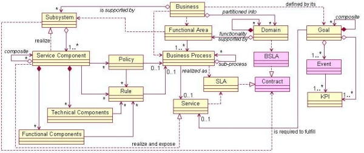
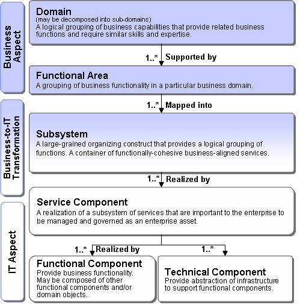
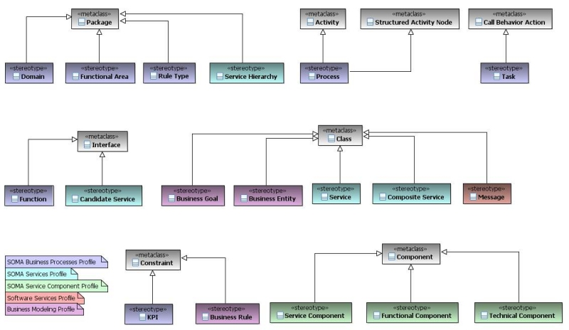
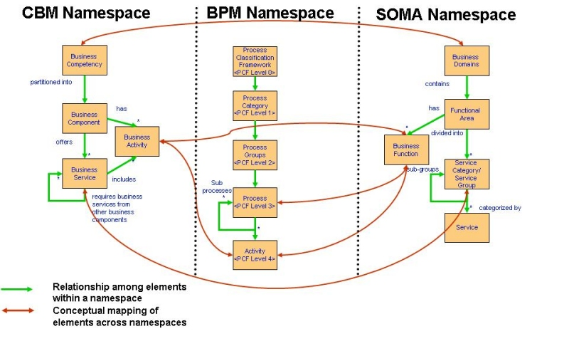

| Concept: SOMA Conceptual Meta-Model |
 |
|
| Related Elements |
|---|
SOMA conceptual model describes a business partitioned in number of domains which are decomposed into multiple functional areas. Functional areas are consisted of subsystems signifying IT boundaries for business capabilities. Subsystems are realized by service components which in turn realized by multiple functional and technical components. A service realized by a service component but a service component may realize multiple services.
A business is partitioned into a number of domains, whcih themsleves are broken into functional areas that consist of
subsystems. A business is supported by a set of subsystems and is defined by its goals. A business will depend on its
business processes and sub-processes that are governed by business service level agreements in each domain. Domains
also have corresponding goals they need to achieve or support. Goals can form a hierarchy and have subgoals associuated
with key performance indicators and in some cases can be related to events, which also relate to measurable KPIs. A
subsystem consists of one or more service components that may be composite. These are associated with policies and
rules. Service components consist of a number of technical and functional components that are dependent on the rules
and policies of the service component and indirectly those of the business process. Processes tend to depend on service
level agreements (SLA) and SLA's are associated with contracts.
Services are also associate with and depend on contracts and are the contract between a provider and consumer. Services
fulfill goals of the business. Service Components realize and expose services. A services has a number fo operations
that have messages associated with them. The conceptual metal model for SOMA is shown below.  The relationships between high level elements in SOMA are shown in following figure.  The metal model as implemented in SOMA-ME tool which is a plugin for Rational Software Architect (RSA) and Rational Software Modeler (RSM) is shown below.  The following figure illustrates the conceptual mapping among multiple namespaces:
 |
| Content Lead | arsanjan@us.ibm.com |
|---|---|
| Change Date | Thu Mar 17 19:36:02 IST 2011 |
© Copyright IBM Corp. 1987, 2016 All Rights Reserved |